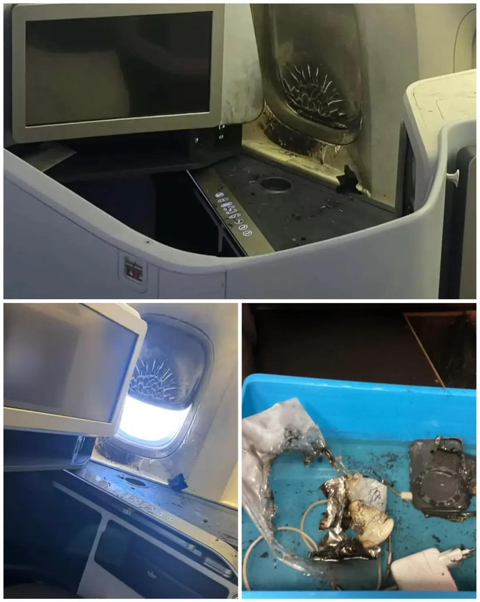
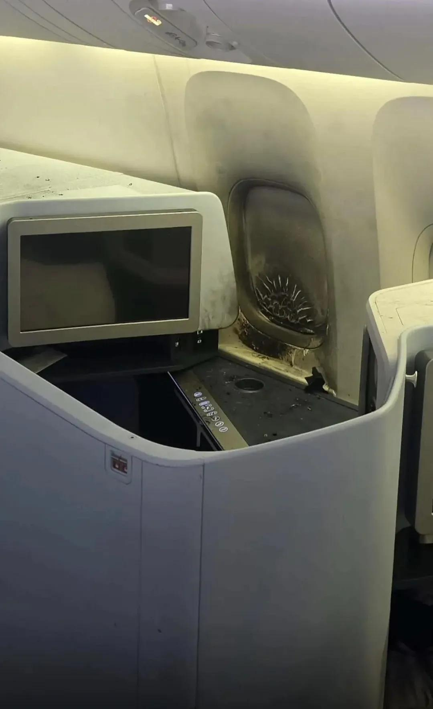
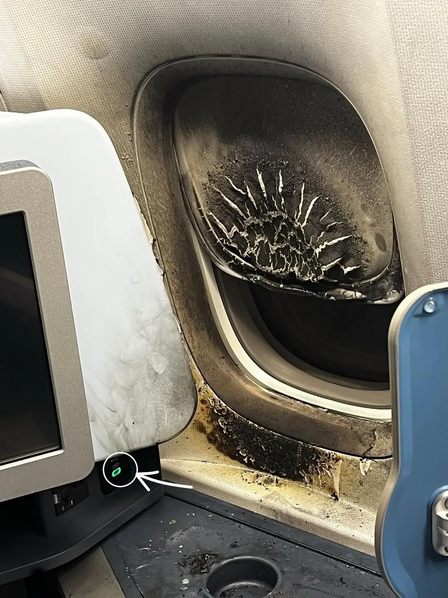

9.17일(목) 암스테르담 발 퀴라소 행을 운항하는 KLM의 KL735편(B777-300ER)이 대서양을 건너가는 도중 기내 보조 배터리 화재로 다시 스키폴 공항으로 회항하는 사고가 발생 함.
보조 베터리에 의한 기내 화재 사고가 예전부터 꾸준히 발생했다 보니 대부분의 항공사는 기내 보조 배터리 사용을 금지하고 있음.
그러나 이번 사고는 비즈니스석 승객이 이런 규정을 무시하고 보조 배터리로 노트북을 충전하다 결국 화재가 발생했고 승무원이 기내 소화기로 진압하여 최악의 참사는 막음
근데 이 규정을 어긴 빌런이 바로,
전직 네덜란드 정치인이자 KLM의 전 CEO인 Camiel Eurlings으로 밝혀짐
자기가 탄 항공사의 CEO까지 했던 양반이 정작 기내 안전수칙도 씹고 사고 낸거라 인터넷에선 조롱이 쏟아지는 중
돈 벌어야지